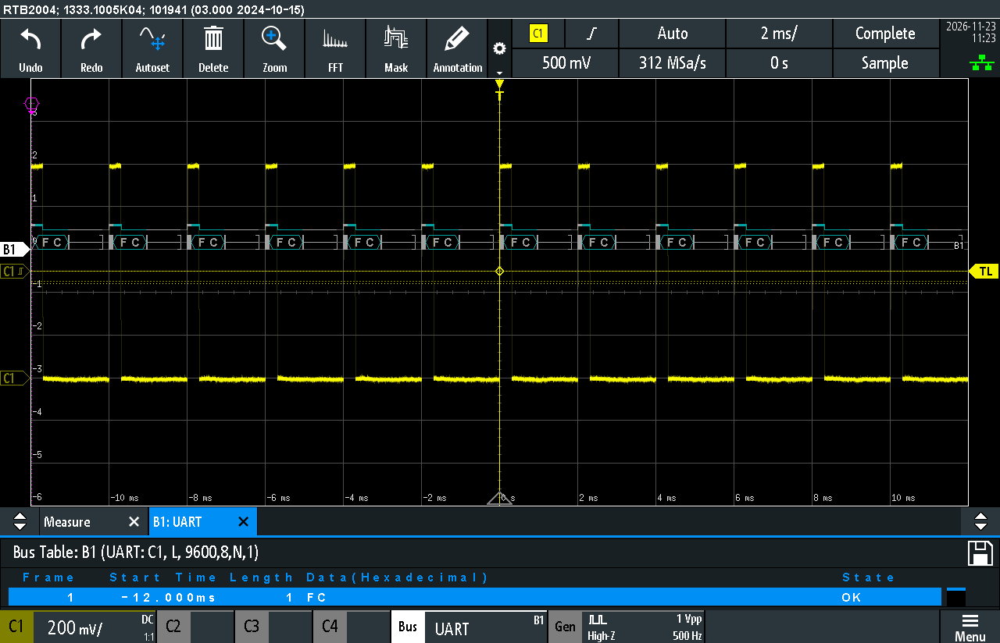
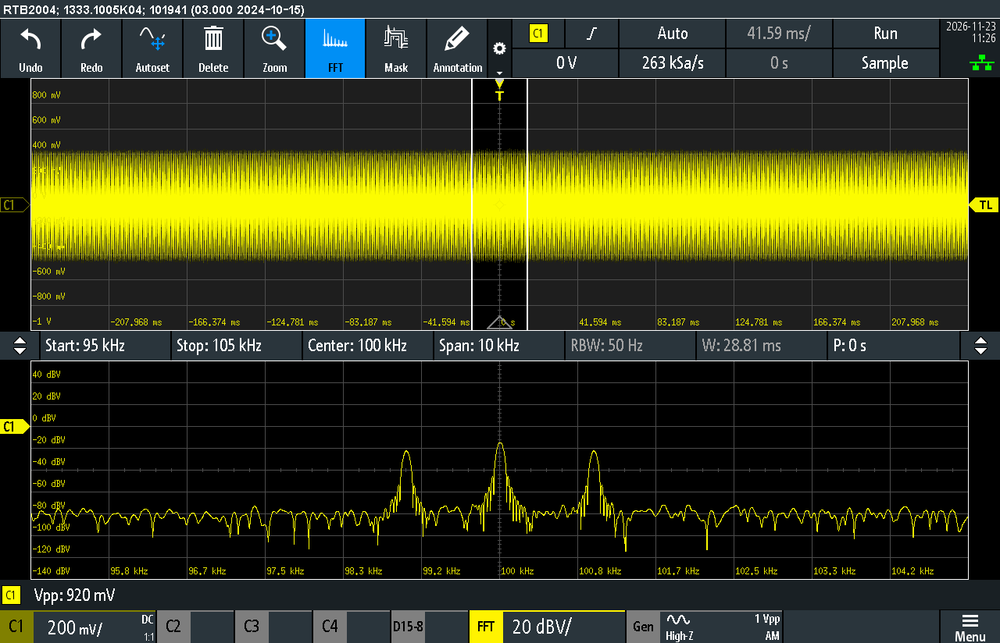
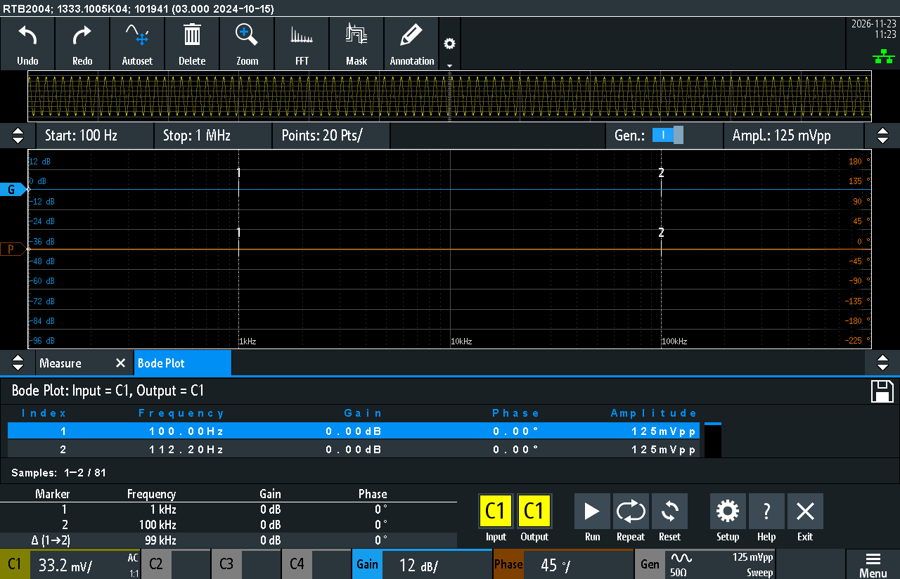

What it does
rs-scope-mcp controls the scope and collects what it measures. It gives Claude the complete remote command set of the RTB2, checked before anything is sent, and task tools that turn a question into the right sequence of settings. Then it collects what the scope measured: samples in volts, logic levels, decoded frames, measurement results and screenshots. All of it lands in a local store. Claude sees a short summary and asks for detail only when your question needs it.
It was built for three kinds of bench work. On the ham-radio bench: transmitter checks through attenuators, AM depth, CW keying shape, harmonics, and filter sweeps. For hardware reverse engineering: find out what unknown pins carry, identify the bus and its rate, and build a census of addresses and commands. For microcontroller and drone development: rails and ripple, power-up sequence, PWM, servos and ESCs, sensor buses, and intermittent faults caught with a mask test and segmented memory.

Every feature was run on an RTB2004 with firmware 03.000 and every option installed. A 40-check acceptance test drives the installed connector through the same protocol Claude Desktop uses, and all 40 pass. The RTB2 is the rebranded RTB2000, with the same hardware and firmware, so both work. Options your scope does not have are not offered.
Features and benefits
| Feature | What it gives you |
|---|---|
| The complete command set | All 962 remote commands the user manual documents, plus 408 command families the firmware reports but the manual does not. Each command is checked before it is sent: a wrong header, an out-of-range value or a command this firmware lacks is refused with a reason. |
| Bench rules built in | FFT, Bode, XY and mask test are exclusive modes; decoders need the right bus type; full memory needs a stopped acquisition. The task tools handle this, so a request does not fail on one of these rules. |
| Capture once, ask many times | One call acquires and stores analog channels in volts, logic pods and decoded buses, with the scope's own setup file. Follow-up questions are answered from the store: a window of samples, edge times, frames by filter, read-only SQL across captures. |
| Bus identification | From the edges of unknown logic lines alone, it tells apart I2C, SPI (with the chip select), UART (with the baud rate and polarity) and servo PWM, then sets up the decoder to confirm. |
| Measurements, spectra, Bode | Up to eight automatic measurements as numbers; an FFT that sets the scope's coupled span and resolution for the requested range and reports the peaks; Bode sweeps with the -3 dB points; the envelope of a modulated carrier. |
| Pass/fail and rare faults | Learn a tolerance mask from a good signal, check it, run thousands of acquisitions, keep only the failures in segmented memory, and step through them one row per failure. |
| Leaves the scope as it was | A task saves the setup first and restores it at the end, with the generators switched off. |
| Demo mode | The scope plays the screen from every science-fiction lab scene, using its own generators: a heartbeat, a radar ping, FM sidebands, bus traffic decoded to text. One cable runs the analog show; the logic probe adds the rest. |
| Four skills | scope-operating, ham-bench, bus-reverse-engineering and embedded-bringup teach Claude the discipline and the procedures for each kind of bench work. |
How it works
The scope answers nothing at all to a command it rejects, which leaves an ordinary client waiting for a timeout. rs-scope-mcp adds a check to every query and reads the error queue after every write, so a failure comes back in milliseconds with the scope's own reason. A capture at full memory holds up to 15 million samples per channel. They stay in the local store; Claude reads a summary of a few hundred tokens and drills into the stored data when it needs more.


Ask it
Tools
| Tool | What it does |
|---|---|
connection / session / setup | Connect and list options; group captures by task; show, save and restore the complete setup |
capture | One acquisition, harvested and stored: analog channels in volts, logic pods, decoded buses, optionally a screenshot |
data | Drill into stored captures: series, edges, envelope, identify, frames, read-only SQL |
measure / spectrum / bode | Automatic measurements; FFT with peaks and noise floor; Bode sweep with -3 dB points |
mask / history | Learn and run pass/fail tests; step through segmented memory one row per acquisition |
screenshot / demo | The screen as an image; the looping demo show |
scpi / scpi_search / scpi_describe / scpi_block | Any command of the full set, validated; search and describe with bench notes; binary transfers |
Install
You need the Claude desktop app, and the scope connected to your network through its LAN port (IP Port 5025). The connector links Claude to the scope. The skills teach Claude how to work the bench. The connector does not install the skills, so you add them as well.
- On Downloads, click
rs-scope-mcp.mcpband the four skill files. Your browser saves them in your Downloads folder. - In Claude, open Settings → Desktop app, click Manage next to Extensions, and drag
rs-scope-mcp.mcpbonto that page. If dragging does not work, click Advanced settings, then Install extension, and choose the file. - Claude shows the connector's settings. Enter the scope's IP address. Leave the port at 5025 and the data folder as it is.
- In Claude, open Customize → Skills, click Add, then Upload skill, and choose
scope-operating.skill,ham-bench.skill,bus-reverse-engineering.skillandembedded-bringup.skillall at once. Click Upload.
The Field Guide has the details, including the scope's network settings.
For other MCP clients, the server is also on PyPI: run it with uvx rs-scope-mcp and set RS_SCOPE_HOST to the scope's address. The same package installs the rs-scope command for quick checks from a terminal.
Safety
The waveform generator, the pattern generator, Bode sweeps and the demo put signals into whatever is connected. The connector refuses to switch them on without an explicit confirmation, and the skills tell Claude to ask for it only after you have said what is connected. The same applies to resets, file deletion, network settings and setup restores. The inputs are 1 Mohm only; for 50 ohm systems use a feed-through terminator. Never connect a transmitter directly: use a dummy load and attenuators.
License and commercial use
Free for hobbyists. Personal use, amateur radio, education and nonprofit use are free under the PolyForm Noncommercial License 1.0.0.
Commercial use needs a license. Any use by or for a business, including internal use on a company test bench, needs a commercial license. Support for more instruments, test procedures written as skills for your products, integration with your test setup, and support plans are available too. Tell us about your bench at Westlake Professionals.